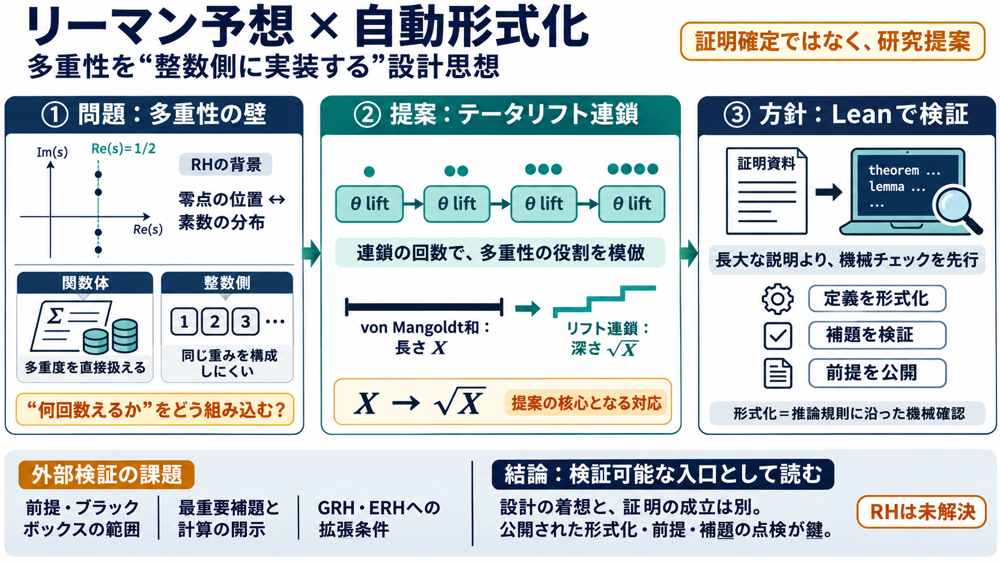

IT navi on X: "✅Anthropicの研究版Claudeが、160年以上未解決の「リーマン予想」に関連する新しい数学的成果を発見した。 ✅リーマン予想そのものを証明したわけではないが、重要な零点が予想通りの位置にある…"
# IT navi on X: "✅Anthropicの研究版Claudeが、160年以上未解決の「リーマン予想」に関連する新しい数学的成果を発見した。 ✅リーマン予想そのものを証明したわけではないが、重要な零点が予想通りの位置にある…" …

RH×自動性の「設計思想」
提示された文章は「Claudeと共同で証明を得た」という主張を軸に、核となる発想――多重性をテータリフト連鎖で“整数側に実装する”――を語ります。
ゼータと素数
リーマン予想（Riemann Hypothesis: RH）は、素数の分布を支配する性質を、リーマンゼータ関数の零点（特に臨界線 Re(s)=1/2 上）の挙動に言い換えたものです。
多重性の壁
Stepahanov型の議論では divisor の multiplicity（多重度） を直接扱うのに対し、整数側ではその多重度を取りにくいのが難所です。
置換原理
そこで文章は、関数体で得られる「多重度」に相当する効果を、整数上では theta lift（テータリフト） を連鎖させる回数として“模倣する”発想を提示します。
長さの対応
文章が最重要の“勘どころ”として挙げるのが、von Mangoldt 和の長さ X に対し、theta lift 連鎖の長さが √X になる、というスケーリング対応です。
役割の分離
提示文章のメッセージは「RHが証明できた」という宣言だけではなく、なぜその方法になったかを設計レベルで示すことにあります。
タイミング事情
文章は、終盤でClaudeが技術的に主導したことや、必要な近傍（補題・定義周り）を十分習得し切る前に提示せざるを得なかった制約を述べています。
Leanの意味
「巨大で読めない証明文書を投稿すべきでない」という立場から、形式化（Leanなどでの機械的確認）を根拠の入口に据える方針が示されています。
外部検証の壁
文章単体では、定理・定義・計算の明示が少なく、読者が論理鎖を直接追跡しにくいという懸念が残ります（Leanが補うが前提の可視性は別資料が必要）。
拡張の主張
提示文章は、RHに留まらず GRH（Generalized Riemann Hypothesis）や ERH（Extended RH）へ容易に拡張できる、と期待を述べていますが、どの仮定がどう変わるかは文章だけでは確定しません。
どう読むべきか
この文章は「完全に信じる根拠」ではなく、Leanによる形式化という検証可能な入口を伴う“研究アナウンス”として読むのが妥当、という評価になります。
参照の置き場
入力に含まれた「Web上の周辺報告」では、RHそのものの確定証明ではなく、関連する零点下限などの改善に関する言及が見られる、と要約されています。
# IT navi on X: "✅Anthropicの研究版Claudeが、160年以上未解決の「リーマン予想」に関連する新しい数学的成果を発見した。 ✅リーマン予想そのものを証明したわけではないが、重要な零点が予想通りの位置にある…" …
- ### ＡＩ、数学難問の解到達か 学者、過程に疑義・宣伝使用に警鐘 なる場合があるのかは、数学的に未解明だ。素数の分布に関わる「 リーマン予想」などと並び、米クレイ数学研究所が解決に賞金１０...［続きを読む］ - …
##### 株主優待検索 企業名や証券コード以外にも優待の種類やキーワードで検索できます。よく見られている優待情報も確認できます。 株主優待検索を使う ##### 銘柄比較ツール 気になる銘柄を並べて株価の推移や株価指標（予想PER…
跳至導覽 跳過主要內容 跳至右欄 [...] 6. now.com 財經 7. Fortune Insight 8. 28Hse.com 9. AM730 10. Infocast 11. 鉅亨網…
跳至導覽 跳過主要內容 跳至右欄 [...] 6. now.com 財經 7. Fortune Insight 8. 28Hse.com 9. AM730 10. Infocast 11. 鉅亨網…